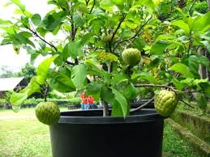
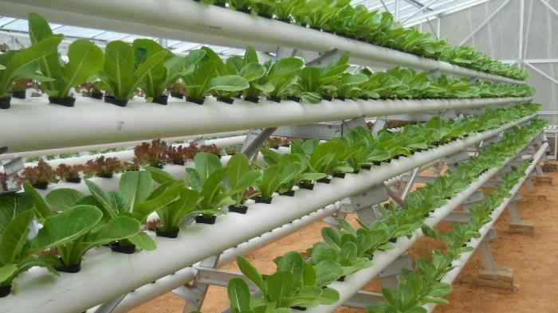
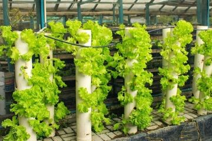
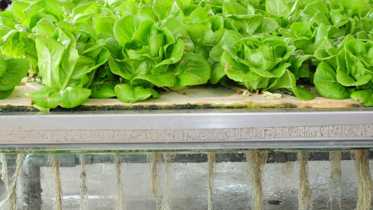

Menyenangkan bukan, jika kita bisa mengonsumsi tanaman dari hasil budidaya sendiri?
Sayangnya dari kita tinggal di perkotaan dengan lahan terbatas. Jangan risau, berikut 4 metode tanam lahan sempit yang bisa kamu coba di rumah.
Metode Tabulampot

Metode budidaya tanaman
dengan tabulampot(tanaman
buah dalam pot) ini tentu sudah
tidak asing lagi.
Metode Hidroponik

Hidroponik merupakan metode
bercocok tanam dengan memakai
tanah sebagai media tanam.
Metode Vertikultur

Vertikultur merupakan teknik
bercocok tanam di lahan sempit
dengan memanfaatkan bidang
vertikal
Metode Aeroponik

Aeroponik adalah sistem
bercocok tanam di udara tanpa
menggunakan tanah